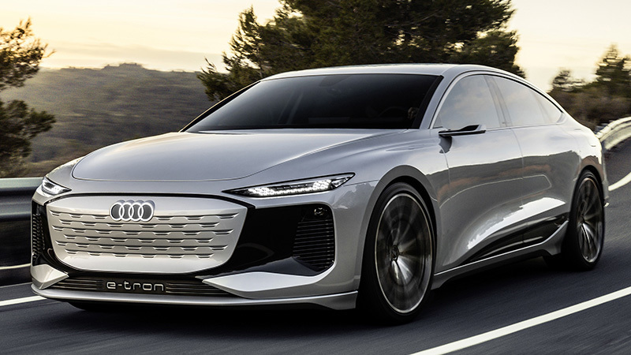

Uno de los coches nuevos que parece confirmado es el Audi A6 e-tron.
Hablamos de una berlina totalmente eléctrica que se ensamblará sobre
la misma plataforma PPE que se encuentra bajo el Q6 e-tron (otro
modelo del que hablamos más abajo).
Por el momento los detalles son un misterio, pero sabemos que estará
disponible en versión Sedán y Avant, ya que Audi mostró unos
prototipos en 2021 y 2022 que así lo confirmaba, y que habrá
versiones de alto rendimiento firmadas por Audi Sport.
